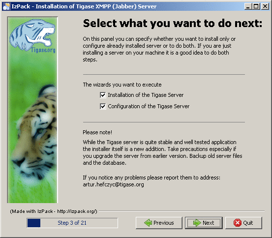
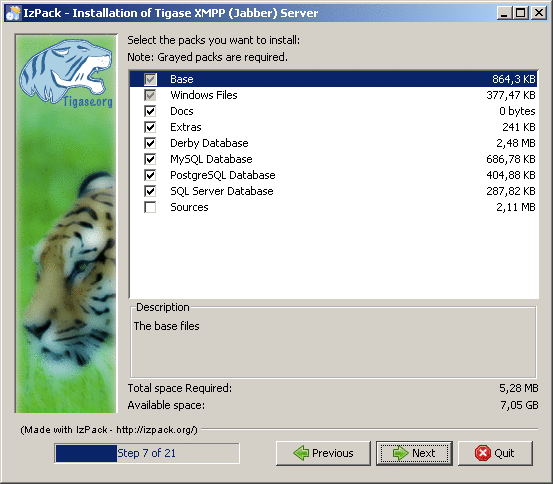
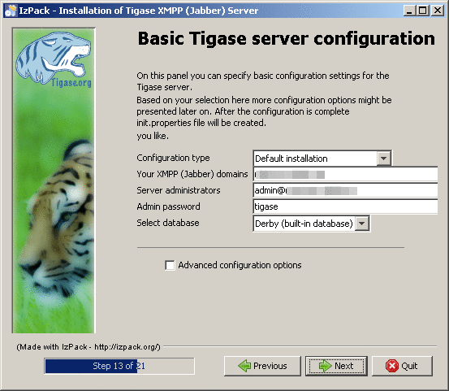

Please note that this tutorial does cover only basic installation mode. Some screens have been omitted because they contain advanced options which are not shown in simple installation mode. Other such as progress of copying files and summary info are on the other hand self explanatory and will also not described.

This screen is only shown when JDK has not been selected automatically. When your JAVA_HOME path is properly set, it will be auto-detected saving you some configuration time. If you are reading this step and still don’t have JDK installed, then go back to the ////<<prequisites,////prerequisites section where you can find some info on how to prepare your system for Tigase installation. Sometimes your system will be configured in a way that prevents detection of JDK path. This often happens when you install JRE after installing JDK. You will have to find JDK directory yourself. It is by default installed in the Program Files\Java directory of your system drive.

Recommended practice is to choose both installation and configuration of the server as manual configuration is more complicated, time consuming and error-prone.
This screen shows some information about Tigase which may help you understand what it is and how it can help to take advantage of the XMPP protocol. It is important that you read all information’s appearing on the installer screens, as they contain valuable hints and most recent information.

This is the point where you choose where do you want you server to be installed. Recommended path should not contain spaces, as it may be reason of some strange path problems. In the case of installation on Windows it should be installed on a short path because there is a limit of path lengths. Also note that on Windows Vista there may be some problems with making the server work while installed in the Program Files directory, related to the working of UAC mechanism, so better don’t install it there. If you don’t want are unsure about where to place the server, you can always leave the default selection.

Next important step is package selection. Some choices are grey and you cannot change them as they are essential. All of the rest is optional. It consists of documentation, database drivers, sources of the server and some extras. When you select an item, you will be presented with a short description of it’s content.
We recommend you to install documentation. It contains valuable resources which may be very helpful in administration and general use of the server.
If you have a working database platform that you want to use for storing all important user information in, just select appropriate db drivers. If you don’t have a database engine, you can use the included derby along with also included drivers.
If you are a developer and you want to be able to check how the server is working or you want to help with the development, you can install also the included source codes.

On this screen you will find most important basic configuration options. As this guide covers only non-advanced set up - disable the advanced configuration checkbox.
You can select which components will be installed. For most installations default selection will most appropriate. You can expand the list to check if any of the other options will better suit your needs.
It is very important that you enter your domain name correctly here.
- On Linux like system you can use the hostname command and extract the domain part from the output. If you use the -f parameter then you will get the fully qualified domain name.
- On Windows use the standard System control panel applet. You will find your domain (computer name) in the Computer name tab.
On the other hand if you want to use Tigase virtual domain support and you have your DNS system configured properly, then you can put your virtual domains list here. Just separate them by comma characters. For example if your server is seen from the outside as veloci.tigase.org, mammoth.tigase.org and tigase.org then you can use Tigase instance as if it were three separate instances. In reality it will be one server, however admin@veloci.tigase.org will be a different user then admin@tigase.org. This feature allows to use one server for separating user groups, for example different organizations.
When you will have your domain name just enter it in the domain text box. Next parameter will be the JID of server administrator. Standard practice is to give him name of admin, however you may choose any name you like. For example for domain tigase.org full admin name would be admin@tigase.org. Just stick your chosen name and domain together using the @ character as separator.
Starting from this version your XMPP admin will be automatically added to the database, so after installation you can just login into the server without registering admin manually.
You should also select a database which will be used for storing user info. Default is the Derby database, if you don’t need anything special just leave it as it is. Just select a new password as the default one may be easy to guess for a hacker.
Important notice: Tigase installer doesn’t contain the actual databases, only drivers allowing db access. One exception is Derby database, which is included in JDK. It is automatically configured by installer, in case of other databases you will need to configure them by yourself.

When you switch to this screen an automatic test of database configuration will be started. It consists of few steps which will be executed in order. After testing connection and configuring schema, admin users will be added.
What to do if any of the tests will fail?
- If you decided to use your own database, check if you entered correct password and whether your database is running.
- If you use the embedded Derby database then probably your problem is more complicated. An error may indicate a bug in the installer. You may report it to one of Tigase developers.
If you cannot go beyond this step after trying to resolve database problems you may try manual installation mode.
When you perform all those steps altogether with choosing Start Menu location and other basic actions you will be informed that installation process is complete. You can now use your Tigase server. There are some post installation actions you may want to perform. They are briefly presented below.
Part of the installation process is selection of Tigase base directory. This is where you can find all important server files. Installer will create some configurable shortcuts in the Start Menu. You can navigate to the menu and use it to start the server. To run the server manually:
On a Linux system you may start the server using the tigase.sh file found in the scripts sub-directory of Tigase server base directory. In the root server directory type the following command:
./scripts/tigase.sh start etc/tigase.conf
- Of course if you have a custom config file then change last command appropriately.
- On a Windows platform you can use a bat file to run the server. There is a run.bat file in the Tigase root directory. Just double click it in Explorer or run it from command line to start the server. A window with server log output will pop-up.
On Windows you can install Tigase as a service. To do it use the InstallTigaseService.bat batch file found also in server root directory.
In this mode service will be running in background and will be controllable from the Services management snapshot. To launch the tool right click on the Computer icon on the desktop. Choose the Manage action. It will run the Computer management graphical configuration program. On the left side choose the Services item. You will be shown with a list of services. Here you can find Tigase service when it will be installed.
To uninstall Tigase service use the UninstallTigaseService.bat file from Tigase server root directory.